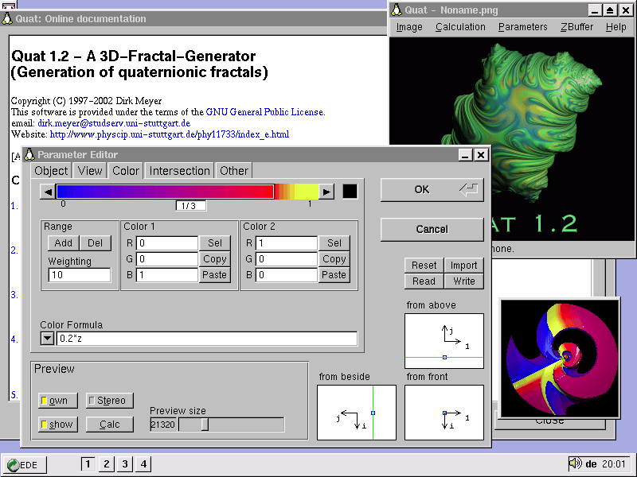

1. Einführung
Sinn und Zweck dieses Programmes ist das Berechnen von dreidimensionalen
Fraktalen. Die berechneten Objekte sind frei im Raum schwebende, verwickelte,
teigartige (und natürlich fraktale) "Klumpen" - im Gegensatz zu dem,
was herkömmlicherweise im Zusammenhang mit Fraktalen als "dreidimensional"
bezeichnet wird (eine bloße Uminterpretation der zweidimensionalen
Daten nämlich).
Die Objekte können koloriert werden, indem durch eine Formel Koordinaten
des Raumes (oder, ab Version 1.0, andere Parameter) mit Farben verknüpft
werden. Die Palette der Farben kann aus bis zu 50 einzelnen Farben oder
Farbverläufen bestehen.
Zusätzlich ist es möglich, Schnittebenen zu definieren. Es
kann so der innere Aufbau der Fraktale dargestellt werden. Besonders interessant
ist natürlich ein Schnitt mit der komplexen Ebene, man erhält
als Schnittfigur das normale zweidimensionale Fraktal, das z.B. auch mit
"Fractint" berechnet werden kann. Zusätzlich sieht man aber, wie verschiedene
Regionen des zweidimensionalen Fraktals im dreidimensionalen Raum miteinander
verknüpft sind.
Screenshot von Quat 1.2 (unter Linux):

Die Berechnung und Speicherung des Bildes erfolgt grundsätzlich
in 24bit True-Color, die Anzeige während der Berechnung funktioniert
hingegen auch in 256-Farben-Modi (allerdings in verminderter Qualität.)
Die von Quat berechneten Fraktale entsprechen genau den herkömmlichen,
zweidimensionalen "Julia-Mengen", die so gut wie jedes Fraktalprogramm
berechnen kann. (Als Iterationsformeln verfügbar sind "Classical Julia"
xn+1 = xn2 - c und "Lambda Julia" xn+1=cxn(1-xn);
x0 ist der zu berechnende Bildpunkt) Um die dritte Dimension
zu bekommen, verwendet Quat anstelle der komplexen Zahlen mit 2 Komponenten
(Real- und Imaginärteil) sogenannte "Hamilton'sche Quaternionen".
Sie sind eine Verallgemeinerung der komplexen Zahlen und bestehen aus 4
Komponenten (1 Realteil und 3 Imaginärteile). Setzt man zwei der zusätzlichen
Imaginärteile Null, so hat man wieder die ganz normalen komplexen
Zahlen. Mit den Quaternionen (daher übrigens der Name "Quat") wäre
es also möglich, sogar vierdimensionale Fraktale zu berechnen, berechnet
werden aber nur dreidimensionale. (Wenn jemand einen vierdimensionalen
Monitor erfindet, erkläre ich mich dazu bereit, mein Programm entsprechend
umzuändern... :-) )
Die Berechnung einer wirklich dreidimensionalen Ansicht (3D-Stereo)
ist möglich. Ohne Hilfsmittel wie 3D-Brillen kann das Fraktal als
echt dreidimensionales Objekt gesehen werden.
Als Ausgabeformat wird das PNG-Format verwendet. Es ist der Nachfolger
von GIF und bietet ebenso wie GIF eine Komprimierung der Bilddaten ohne
Qualitätsverlust (JPEG komprimiert zwar besser, aber die Bildqualität
leidet darunter). Nähere Informationen über PNG:
http://www.libpng.org/pub/png/.
Da PNG das Speichern applikationsspezifischer Daten erlaubt, speichert
Quat sämtliche zur Erzeugung eines Bildes nötigen Werte innerhalb
des PNG-Bildes.
Quat verwendet zum Speichern der PNG-Bilder eine Library namens "ZLIB".
Diese Library ist eine Komprimierungs-Library und hat nichts mit Fraktalberechnung
zu tun. Sie wurde von Jean-loup Gailly und Mark Adler geschrieben. Nähere
Informationen zu ZLIB: http://www.zlib.org/
Die Benutzeroberfläche wurde mit dem portablen "Fast Light Toolkit"
(FLTK) erstellt. Die Homepage des Toolkits ist unter:
http://www.fltk.org/
Quat ist freie Software. Sie können es unter den Bedingungen der
GNU General Public License,
wie von der Free Software Foundation herausgegeben,
weitergeben und/oder modifizieren, entweder unter Version 2 der Lizenz
oder (wenn Sie es wünschen) jeder späteren Version.
Die Veröffentlichung dieses Programms erfolgt in der Hoffnung,
daß es Ihnen von Nutzen sein wird, aber OHNE JEDE GEWÄHRLEISTUNG
- sogar ohne die implizite Gewährleistung der MARKTREIFE oder der
EIGNUNG FÜR EINEN BESTIMMTEN ZWECK. Details finden Sie in der GNU
General Public License.
Sie sollten eine Kopie der GNU General Public License zusammen mit diesem
Programm erhalten haben. Falls nicht, schreiben Sie an die Free Software
Foundation, Inc., 675 Mass Ave, Cambridge, MA 02139, USA.
Ein besonderer Dank an Max Schwoerer für die Klärung einiger
rechtlicher Fragen und an Oliver Siemoneit für die Hilfe bei der englischen
Übersetzung.
Vielen Dank an Larry Berlin (lberlin@sonic.net)
für seine Hinweise zu Themen wie 3D-Stereo-Ansicht, für seine
vielfältigen Ideen zur Verbesserung des Programms (speziell der Benutzeroberfläche)
und für das Testen der Vorversionen von Quat 0.92.
Larry Berlin bietet ein großartiges 3D-Ezine an (http://3dzine.simplenet.com/3dzine.html)
und hat vor, dort eine Galerie von Bildern zu zeigen, die er auf der Grundlage
der von Quat berechneten Objekte erstellt hat. Ich hatte Gelegenheit, einige
Beispiele zu sehen. Ist wirklich einen Besuch wert!
Dank auch an Eva-Maria von Garrel für's Testen.
1.1 Was ist neu?
Version 1.20:
Neue Features:
- Die Vorschau im Parameter Editor ist jetzt vergrößerbar und
hat das selbe Seitenverhältnis wie das zu berechnende Bild.
- Tooltips und integrierte Dokumentation.
- einige Verbesserungen der Bedienbarkeit.
- Windows-Version: Verwendet ein Installationsprogramm (Inno Setup)
- Verwendung von FLTK 1.1, das einige große Verbesserungen gegenüber
1.0 bietet (z.B. die Dateiauswahl)
Bugfixes:
- Der Intersection Editor funktionierte nicht richtig, wenn mehr als eine
Schnittebene eingegeben wurde.
- Hohe Bailout-Werte konnten nicht aus einer INI-Datei
gelesen werden.
- Parameter im "Other Editor" wurden nicht aktualisiert, wenn im Parameter
Editor eine INI-Datei eingelesen wurde.
- Unix: Quat hängte sich auf, wenn ein Verzeichnis anstelle einer
Datei selektiert wurde.
- Leere Bilder (entstanden durch Abbruch der Berechnung bevor die erste
Zeile berechnet war) wurden nicht korrekt gespeichert.
Version 1.11: (12.7.2001)
keine neuen Features
Bugfixes:
- Die Berechnung in der DOS-Version kann wieder mit Tastendruck unterbrochen werden.
- Einige Änderungen am Source-Code zur Kompatibilität mit neueren Compilern.
Version 1.10: (14.12.2000)
Neue Features:
- Schnellere Berechnung von Bildern mit der "Lambda"-Formel
(etwa 20% schneller)
- 3 neue Iterations-Formeln zur Auswahl:
- xn+1 = xn*ln(xn) - c
- Cubic Julia: xn+1 = xn3 - c
- xn+1 = xnp1 - c
- Für die 3. neue Formel (die einen Parameter als Exponent benötigt)
wurde das Format des PNG-quAt-Chunks verändert.
Buxfixes:
- Der Normalenvektor wurde unter Umständen falsch berechnet, was Auswirkungen
für die Beleuchtung hatte. Alte Bilder, die mit Version >=1.10 erneut
berechnet werden, können veränderte Beleuchtung aufweisen.
- Dateinamen-Erweiterungen beim Speichern werden nun korrekt angehängt.
- Bei zu großen Bildern sollte Quat jetzt merken, wenn ihm der Speicher
ausgeht.
Version 1.01: (16.8.2000)
Bugfix-Release:
- Bug behoben, der manchmal zum Absturz von Quat beim Verlassen des
Parameter-Editors führte.
- Bereichsüberprüfung des Parameters der Orbit-Funktionen
Version 1.00: (8.8.2000)
-
Die Benutzeroberfläche wurde komplett für FLTK neu geschrieben
und verbessert.
-
neue, objektbezogene Art der Einfärbung (durch neue Funktionen für
die Farbformel: orbite, orbitj, orbitk und orbitl)
Version 0.92: (7.12.1998 / 0.92b: 5.10.1999)
-
Endlich eine [Graphische] Benutzeroberfläche für die Windows-
und X-Window-Version hinzugefügt, obwohl ich das nie vorhatte...
Die volle Funktionalität der bisherigen Initialisierungsdateien
kann über Dialogboxen erreicht werden: Es gibt einen "Object Editor",
einen "View Editor", einen "Color Editor", einen "Intersection Editor"
und einen Dialog für die übrigen Parameter.
Es gibt jetzt auch Bildlaufleisten, falls das Bild größer
als das Fenster ist. Die Bedienung läuft im Windows-Stil ab (Image|Open,
Image|Save, Image|Save As,...) und benötigt dementsprechend wesentlich
mehr Speicher als vorher.
-
Windows-Version: in 32bit compiliert (benötigt daher Win 95/98/2000
oder NT), ist wesentlich schneller als vorher, Unterstützung von langen
Dateinamen, Win95 look & feel.
-
Berechnung von 3D-Stereo-Paaren, die ohne spezielle Zusatzgeräte echt
dreidimensional gesehen werden können (mit dem sogenannten "Kreuzblick",
siehe Anhang 5.3). Hierfür wurde das neue Schlüsselwort
"interocular" hinzugefügt.
-
Neue Formel hinzugefügt: xn+1 = cxn(1-xn)
-
Erzeugung von sogenannten "ZBuffern". Dies ermöglicht es, bestimmte
Parameter, die nichts mit der fraktalen Bildberechnung zu tun haben (z.B.
die Farbgebung), auch noch nach der Berechnung zu verändern. Man kann
so mit dem Objekt "spielen", also z.B. verschiedene Farben ausprobieren,
um zu sehen, was am besten aussieht, ohne lange warten zu müssen.
-
Anderer, einfacherer Algorithmus zur Berechnung des Normalenvektors wird
verwendet.
-
Neue Funktionen für die Farbformel: atan, asin und acos
-
Die Zeit, die zur Berechnung benötigt wurde, wird zusammen mit dem
Bild gespeichert (allerdings nicht sehr genau, nur in Sekunden)
-
gegen die Library zlib, version 1.1.3, gelinkt.
Version 0.91: (8.2.1998)
-
Struktur der Initialisierungsdateien geändert. Es kann jetzt die ganze
Information in einer einzigen Datei gespeichert werden, das alte Schema
ist jedoch immernoch möglich, wenn man das Schlüsselwort "include
<Datei>" benutzt. Die Schlüsselwörter "colorfile", "objectfile"
und "cutfile" werden nicht mehr erkannt. (stattdessen "include" benutzen.)
-
antialiasing Schlüsselwort hinzugefügt. Es kann nun der Moire-Effekt
verhindert werden, der für störende Muster auf den Objekten verantwortlich
ist. Das Ergebnis ist in den meisten Fällen eine viel bessere Bildqualität.
-
Formelinterpreter ("colorscheme") intern von Grund auf geändert.
-
Bugfix die Option "-p" betreffend. (Segmentation fault)
-
Bugfix: Auf Rechnertypen, bei denen das "alignment" von "doubles" eine
Rolle spielt (z.B. DEC Alpha, nicht Intel) führten Bilder mit Schnittebenen
zu "alignment errors".
-
Windows-Version: Verbesserte Bedienung in Win95 (Drag & Drop auf Icon,
Context-Menü).
Lesen Sie dazu den Abschnit 3.2 in dieser Datei.
Version 0.90b: (14.9.97)
-
Keine Änderungen am Sourcecode, nur englischsprachige Dokumentation
hinzugefügt
Version 0.90: (29.7.97)
Erste veröffentlichte Version.
1.2 Systemvoraussetzungen
Im Prinzip keine, wenn Sie ANSI-C/C++-Code compilieren können... :-)
Die Voraussetzungen für die vorcompilierten Versionen von Quat:
- Windows 95/98/ME/XP/NT/2000: Quat läuft wahrscheinlich auf jedem System,
auf dem auch Windows läuft. (Ich habe nur Windows 95 ausprobiert, aber es
gibt keinen Grund, warum es nicht auch auf späteren Versionen laufen sollte.)
- Linux: glibc 2.2, System basiert auf gcc 2.95 (und nicht 3.x). Getestet
mit Slackware 8.0. Es sollte kein Problem sein, Quat unter anderen
Linux-Distributionen zu compilieren.
- DOS: (Textversion ohne grafische Ausgabe auf dem Schirm). 486 Prozessor
oder höher (u.a. Pentium), 4 MB RAM (theoretischer Wert, ich hatte
leider keinen Computer mit so wenig Speicher zum Testen zur Verfügung).
Unter reinem DOS (ohne Win95/98 im Hintergrund) funktioniert Quat nicht,
auch wenn eine solche Version mit DJGPP problemlos compiliert werden könnte.
Im übrigen ist der Source-Code von Quat verfügbar, so daß
man sich für jedes System, das ANSI-C compiliert, eine Textversion
herstellen kann (ohne grafische Ausgabe, aber mit minimalem Speicherbedarf). Sinnvoll
ist dies z.B. für UNIX-Systeme, bei denen ein GNU-C-Compiler meist
schon im Betriebssystem integriert ist. (Mit dem systemeigenen Compiler dürfte
es aber auch funktionieren.) C++ wird nur für die Benutzeroberfläche
benötigt.
1.3 Bugs und Adressen, Mailing-Liste
Falls Sie Verbesserungsvorschläge haben, oder einen Bug berichten
wollen, können Sie eine Email an mich
(dirk.meyer@studserv.uni-stuttgart.de)
schicken. Ich würde mich sehr über Feedback freuen. Falls Sie
Lust haben und programmieren können, können Sie mir auch Soure-Code
schicken. Ich werde ihn in zukünftigen Versionen einbauen. (Und natürlich
Sie als Autor erwähnen!)
Mir schwebt dabei das große Vorbild "Fractint" vor, vielleicht
finden sich ja auch hier ein paar Enthusiasten!
Meine herkömmliche Adresse ist:
Dirk Meyer
Marbacher Weg 29
D-71334 Waiblingen
Germany
Die neueste Version (und der Source-Code) von Quat sollte immer über
http://www.physcip.uni-stuttgart.de/phy11733/
zu beziehen sein.
Es gibt auch eine englischsprachige Mailing-Liste, in der sowohl künstlerische
Aspekte wie auch technische und mathematische Themen diskutiert werden.
Ein Archiv alter Nachrichten der Mailing-Liste ist einsehbar unter:
http://groups.yahoo.com/group/quat/
Um sich in die Liste einzutragen und die aktuellen Nachrichten zu erhalten,
einfach eine Email an quat-subscribe@yahoogroups.com
schicken.